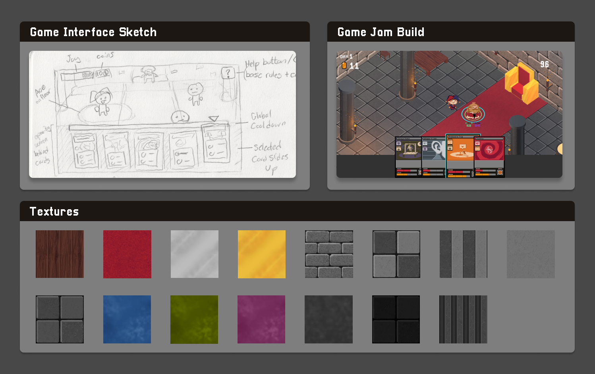

Deck-building Game
Project information
- Project date: January 2024
- Team: 3 People
- Role: Lead UI Designer, Illustrator
About
During the six-day 2024 Vancouver Global Game Jam, two friends and I collaborated on creating a project together. The theme for this year's jam was "Make Me Laugh," which inspired us to develop a deck-building game centered around playing as Jerry the jester, whose goal is to entertain the king's court.

To do this, the player uses joke cards of various elements. Depending on the court member’s sense of humor jokes can receive a positive, neutral, or negative responses from the court members. If court morale is too low, the player loses.
My Role
For this project, I took on the responsibility of creating a majority of the game's visual 2D assets. This includes designing the card layouts and illustrations, crafting overworld character designs and textures. As well as creating various assets, such as the game's logo.
Card Design
A large amount of my time was dedicated to the overall look of the cards which changed a lot throughout the project. Placeholder art was used until we fully understood our game mechanics and had a set card layout.

Early on, cards were not going to have unique art and each type of card was going to share a common image depicting a different facial expression. These later changed into smaller icons to go with unique card art.

When we decided there would be multitype cards I knew that aside from just joke icons I wanted to utilize a mixture of colour schemes together in the cards’ art so they could be easily identified in just a glance.
As seen below, a card’s background color consists of its primary type with colors from its secondary type integrated heavily into the card’s art. These colours have been tested together in accommodation to different types of colorblindness.

The final version of the cards uses the font Pixellari by Zacchary Dempsey-Plante.
Character Sprites
In the game, 2D characters navigate a 3D environment. I drew quick sketches of the characters based on short descriptions written by a teammate, which were then animated to create simple walking sprites.

Environment
A rough sketch was created of the game’s interface of what it could look like in action. During development, there were debates of if the cards should be visible on the bottom or right of the screen. I recommended that due to the card’s elements being integral to the game, they would be most visible across the bottom of the screen.
I also created the textures for the environment, including stone, wood, carpet, and metal surfaces that were applied to the 3D models.
Card Illustrations
With the limited timeframe I thought that adapting a simplistic art style would amplify the card’s comedic effect. In a similar vein, to save time some cards are re-colored versions of other cards with different background patterns and slight expression changes.
Reflection
The main challenge we encountered was the limited time available to complete the project. This led to some instances of miscommunication regarding the types of certain cards, resulting in some colour inconsistencies of their card art. In the future this could be avoided by making the information clearer on our design document such as color-coding each element type.
Given these time constraints, we embraced a rough-and-ready approach. If given further development we would like to expand upon the game focusing on balancing the gameplay and refining aesthetics.


{kind=link}
{kind=link}
{kind=link}